<div class="kasi-shell">
  <!-- Voile (tiroir mobile) -->
  <div class="kasi-scrim" [class.is-visible]="mobileNavOpen" (click)="mobileNavOpen = false"></div>

  <!-- ================= Rail latéral ================= -->
  <aside class="kasi-rail" [class.is-open]="mobileNavOpen">
    <a class="kasi-rail__brand" href="{{ 'branding.footer.address' | translate }}" target="_blank" rel="noopener">
      <span class="kasi-rail__logo">
        
      </span>
      <span class="kasi-rail__brandtext">
        <strong>{{ 'branding.menu.header' | translate }}</strong>
        <small>ADMIN CONSOLE</small>
      </span>
    </a>

    <nav class="kasi-rail__nav">
      <!-- Groupes de tête : Accueil, Chauffeurs -->
      @for (group of navGroupsTop; track group) {
        <ng-container *ngTemplateOutlet="groupTpl; context: { $implicit: group }"></ng-container>
      }

      <!-- Liens plats : Riders, Requests, SOS, Complaints -->
      <div class="kasi-rail__section">
        @for (link of navTop; track link) {
          <ng-container *ngTemplateOutlet="linkTpl; context: { $implicit: link }"></ng-container>
        }
      </div>

      <!-- Groupes de configuration : Versements, Marketing, Comptabilité, Gestion -->
      @for (group of navGroupsBottom; track group) {
        <ng-container *ngTemplateOutlet="groupTpl; context: { $implicit: group }"></ng-container>
      }
    </nav>

    <div class="kasi-rail__footer">
      <span class="kasi-status-dot"></span>
      <span>{{ 'branding.menu.header' | translate }} · Console</span>
    </div>
  </aside>

  <!-- Modèle : lien simple -->
  <ng-template #linkTpl let-link>
    <a class="kasi-navlink" [routerLink]="link.route" [queryParams]="link.queryParams || null"
      routerLinkActive="is-active">
      <i class="kasi-navlink__icon" nz-icon [nzType]="link.icon"></i>
      <span class="kasi-navlink__label">{{ link.labelKey | translate }}</span>
    </a>
  </ng-template>

  <!-- Modèle : groupe repliable -->
  <ng-template #groupTpl let-group>
    <div class="kasi-rail__group" [class.is-open]="navGroupsOpen[group.key]">
      <button type="button" class="kasi-grouphead" (click)="toggleGroup(group.key)">
        <i class="kasi-grouphead__icon" nz-icon [nzType]="group.icon"></i>
        <span class="kasi-grouphead__label">{{ group.labelKey | translate }}</span>
        <i class="kasi-grouphead__chevron" nz-icon nzType="right"></i>
      </button>
      <div class="kasi-group__items">
        @for (child of group.children; track child) {
          <a class="kasi-navlink is-child" [routerLink]="child.route"
            [queryParams]="child.queryParams || null" routerLinkActive="is-active">
            <i class="kasi-navlink__icon" nz-icon [nzType]="child.icon"></i>
            <span class="kasi-navlink__label">{{ child.labelKey | translate }}</span>
          </a>
        }
      </div>
    </div>
  </ng-template>

  <!-- ================= Colonne principale ================= -->
  <div class="kasi-main">
    <!-- Topbar -->
    <header class="kasi-topbar">
      <div class="kasi-topbar__left">
        <button type="button" class="kasi-iconbtn kasi-burger" (click)="mobileNavOpen = !mobileNavOpen"
          aria-label="Menu">
          <i nz-icon nzType="menu"></i>
        </button>
        <div class="kasi-account">
          <span class="kasi-account__avatar">K</span>
          <span class="kasi-account__meta">
            <strong>{{ 'branding.menu.header' | translate }}</strong>
            <small><span class="kasi-status-dot"></span>ADMIN CONSOLE</small>
          </span>
        </div>
      </div>

      <div class="kasi-topbar__right">
        <!-- Langue -->
        <a class="kasi-iconbtn" nz-dropdown [nzDropdownMenu]="menu" nzPlacement="bottomRight"
          nz-tooltip="{{ 'overview.switch.language' | translate }}">
          <i nz-icon nzType="global"></i>
        </a>
        <nz-dropdown-menu #menu="nzDropdownMenu">
          <ul nz-menu nzSelectable>
            @for (lang of languages; track lang) {
              <li nz-menu-item (click)="changeLanguage(lang.code)">
                {{ lang.label }}
              </li>
            }
          </ul>
        </nz-dropdown-menu>

        <!-- Thème -->
        <button type="button" class="kasi-iconbtn" (click)="themeService.switchTheme()"
          nz-tooltip="{{ 'overview.switch.darkMode' | translate }}">
          <i nz-icon nzType="bulb"></i>
        </button>

        <!-- Notifications -->
        @if ((stats | async)?.data; as aggregates) {
          <nz-badge
            [nzDot]="aggregates.complaintAggregate[0].count?.id !== 0 || aggregates.distressSignalAggregate[0].count?.id !== 0 || aggregates.driverAggregate[0].count?.id !== 0 || newComplaints != 0 || newSos != 0">
            <button type="button" class="kasi-iconbtn" nz-popover
              nzPopoverTitle="{{ 'overview.notification.title' | translate }}"
              [nzPopoverContent]="notificationTemplate" nzPopoverPlacement="bottomRight">
              <i nz-icon nzType="bell"></i>
            </button>
          </nz-badge>
        }
        <ng-template #notificationTemplate>
          @if ((stats | async)?.data?.distressSignalAggregate; as distressSignals) {
            <nz-row>
              <div>
                <nz-avatar class="not-avatar" routerLink="/sos" nzShape="square" nzIcon="alert"
                [ngStyle]="{'background-color':((distressSignals[0].count?.id ?? 0) + newSos) == 0 ? null : '#d3adf7'}"></nz-avatar><span
                class="not-desc"><b>{{(distressSignals[0].count?.id ?? 0) + newSos}}</b>
              {{'notification.distressSignals.suffix' | translate}}</span>
            </div>
          </nz-row>
        }
        <nz-row>
          <nz-divider></nz-divider>
          @if ((stats | async)?.data?.complaintAggregate; as complaints) {
            <div>
              <nz-avatar class="not-avatar" nzShape="square" nzIcon="customer-service" routerLink="/complaints"
              [ngStyle]="{'background-color':((complaints[0].count?.id ?? 0) + newComplaints) == 0 ? null : '#b7eb8f'}"></nz-avatar><span
              class="not-desc"><b>{{(complaints[0].count?.id ?? 0) + newComplaints}}</b>
            {{'notification.complaints.suffix' | translate}}</span>
          </div>
        }
      </nz-row>
      @if ((stats | async)?.data?.driverAggregate; as pendingDrivers) {
        <nz-row>
          <nz-divider></nz-divider>
          <div>
            <nz-avatar class="not-avatar" nzShape="square" nzIcon="car" routerLink="/drivers"
              [queryParams]="{filter: 'status|in|PendingApproval'}"
            [ngStyle]="{'background-color':pendingDrivers[0].count?.id == 0 ? null : '#87e8de'}"></nz-avatar><span
            class="not-desc"><b>{{pendingDrivers[0].count?.id}}</b>
          {{'notification.pendingDrivers.suffix' | translate}}</span>
        </div>
      </nz-row>
    }
  </ng-template>

  <!-- Déconnexion -->
  <button type="button" class="kasi-iconbtn kasi-iconbtn--danger" (click)="logout()"
    nz-tooltip="{{ 'overview.logout' | translate }}">
    <i nz-icon nzType="logout"></i>
  </button>
</div>
</header>

<!-- Contenu -->
<main class="kasi-content">
  <div class="kasi-content__inner">
    <router-outlet></router-outlet>
  </div>
</main>

<footer class="kasi-footer">
  <span>{{ 'branding.footer.prefix' | translate }}
    <a href="{{ 'branding.footer.address' | translate }}">{{ 'branding.footer.title' | translate }}</a>
  {{ 'branding.footer.suffix' | translate }}</span>
</footer>
</div>
</div>
